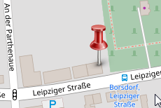

Praxis für Osteopathie und Kinesiologie
Madeleine Wabner - Heilpraktikerin
Start
Osteopathie
Kinesiologie
Über mich
Praxis
Kosten
"Wer keine Zeit für seine Gesundheit hat,
wird eines Tages Zeit haben müssen, krank zu sein" (unbekannt)
Kontakt:
Praxis für Osteopathie und Kinesiologie
Madeleine Wabner
Rübezahlweg 24
04277 Leipzig
Telefon: 0341 118877
Email:
kontakt@praxis-wabner.de
Termine:
nach Vereinbarung
Anfahrt:

Bitte klicken Sie auf die Karte
für Interaktive Ansicht